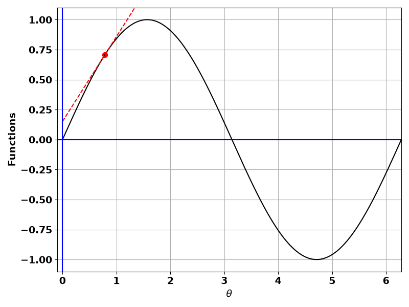
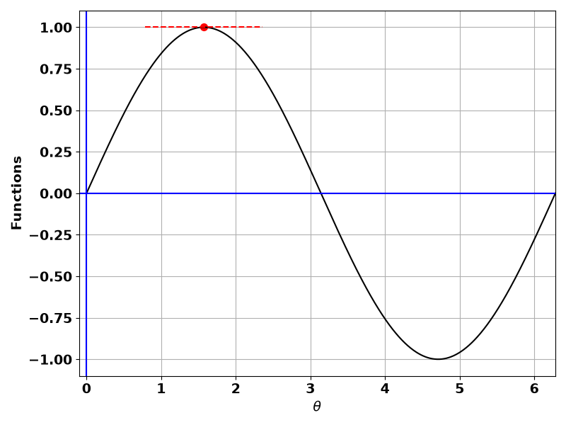
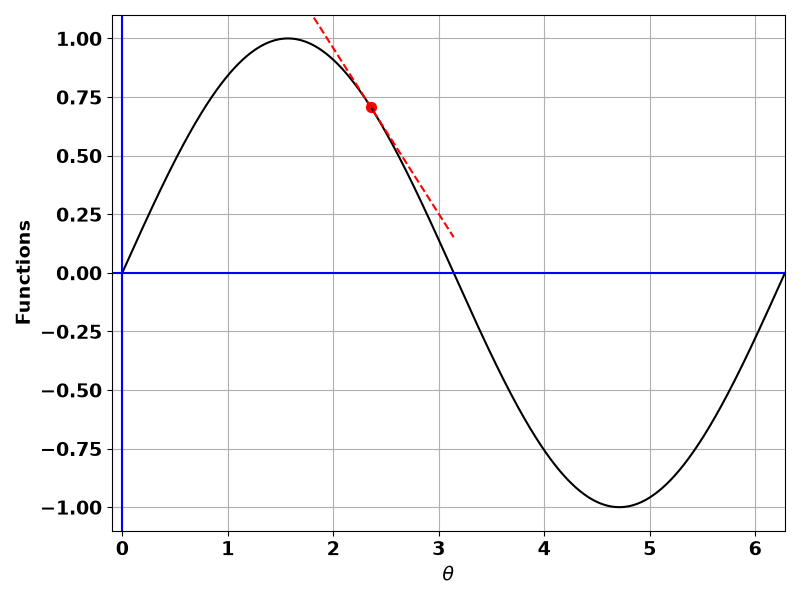
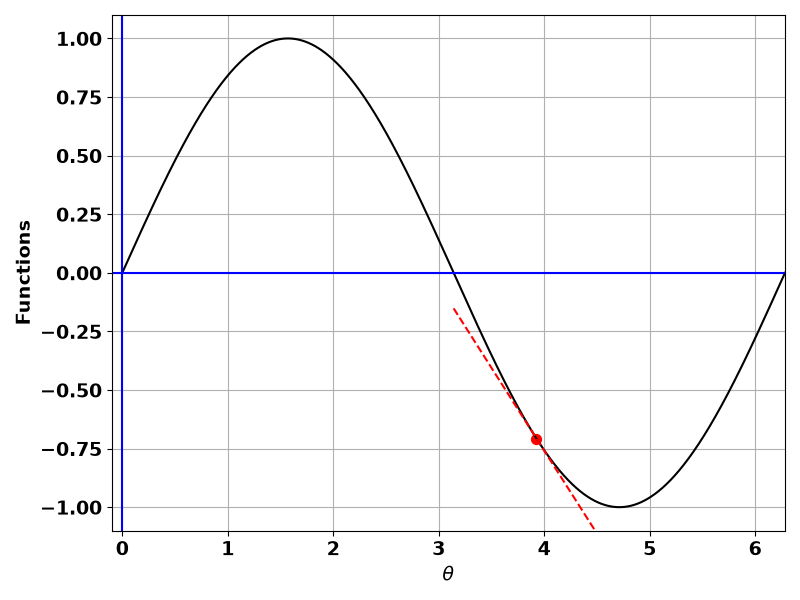
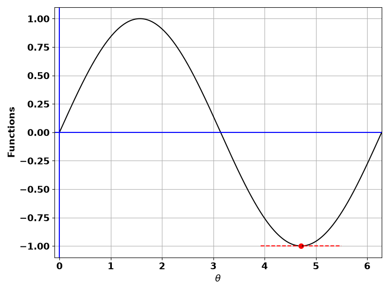
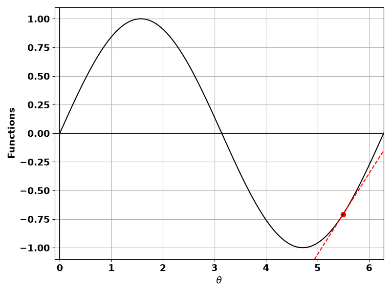

y = f(x) \qquad (1)
We are interested in finding the instantaneous change in y with respect to x.
Before looking into the instantaneous change, we look into the change in y as x changes.
This change can be computed as shown below.
y + \Delta y = f(x + \Delta x) \qquad (2)
We are interested in finding the change in y \left( \Delta y \right) per unit change in x \left( \Delta x \right) i.e., how much y changes per unit change in x \left( \frac{\Delta y}{\Delta x} \right).
Therefore, we modify (2) as shown below.
\begin{align} \Delta y &= f(x + \Delta x) - y \\ &= f(x + \Delta x) - f(x) \qquad \qquad \qquad (\text{Using equation }(1)) \end{align}
\frac{\Delta y}{\Delta x} = \frac{f(x + \Delta x) - f(x)}{\Delta x}
\frac{\Delta y}{\Delta x} = \frac{f(x + \Delta x) - f(x)}{(x + \Delta x) - \Delta x} \qquad (3)
\begin{align} y_1 &= f(x) \\ y_2 &= f(x + \Delta x) \\ x_1 &= \Delta x \\ x_2 &= x + \Delta x \end{align}
\frac{\Delta y}{\Delta x} = \frac{f(x + \Delta x) - f(x)}{(x + \Delta x) - \Delta x} = \frac{y_2 - y_1}{x_2 - x_1} \qquad (4)
It means, equation (3) represents the slope of the line.
Note that the points on the right hand side of equation (3) are the coordinates of points P and Q in figure 2.
These points intersect at two different points on the graph, therefore the line passing through these points is the secant line and the slope of the line in equation (3) or (4) is the slope of the secant line.
In real physical world, we deal with problems involving continuously varying quantities and in these problems we need instantaneous changes in the dependent variable with respect to (per unit change) the independent variable.
Let’s represent the small change with \delta and this change is so small that \delta \rightarrow 0.
Therefore, we modify equation (3) as shown below.
\lim_{\delta x \rightarrow 0} \frac{\delta y}{\delta x} = \lim_{\delta x \rightarrow 0} \frac{f(x + \delta x) - f(x)}{\delta x} \qquad (5)
(x + \delta x) - x \approx 0
It confirms that point P approaches point Q and therefore secant line becomes the tangent line as shown in figure.
This gives the instantaneous change.
In short form we write
\lim_{\delta x \rightarrow 0} \frac{\delta y}{\delta x} = \frac{dy}{dx}
\frac{dy}{dx} = \lim_{\delta x \rightarrow 0} \frac{f(x + \delta x) - f(x)}{\delta x} \qquad (6)
Suppose the angle between the tangent line with the horizontal is \theta, then the angle between the tangent line and the line \delta x is also \theta, however the triangle is a micro triangle.
In the micro triangle, we have the following trigonometric identity.
\tan \theta = \frac{f(x + \delta x) - f(x)}{\delta x}
\tan \theta = \lim_{\delta x \rightarrow 0} \frac{f(x + \delta x) - f(x)}{\delta x} \qquad (7)
\tan \theta = \frac{dy}{dx}
This is because, \tan \theta is also the slope of line (hypotenuse).
Finally, equation (6) says that we can find derivative along the curve, but in real world problems we need derivatives at fixed points e.g., at t = 5 or x=3 etc.
y = \sin x
\frac{dy}{dx} = \cos x
Instead of using the first principle, we are interested in derivatives at fixed points.
For a complete understanding, we consider the following points.
x = \frac{\pi}{4}, \frac{\pi}{2}, \frac{3\pi}{4}, \frac{5\pi}{4}, \frac{3\pi}{2}, \frac{7\pi}{4}
y = \sin (\pi/4) = 0.707
So, the point is (x, y) = (\pi/4, 0.707).
Now,
m = \frac{dy}{dx} = \cos x = \cos (\pi/4) = 0.707
y - y_1 = m(x - x_1)
y - 0.707 = 0.707 (x - \pi/4)
y - 0.707 = -0.707(\pi/4)
y = 0.707 -0.707(\pi/4) = 0.1513 = c
y = 0.707x + 0.1513
At x=0, y = 0.1513 and at x=\pi/2, y=1.262.
Therefore, we have two points (x_1, y_1) = (0, 0.1513) and (x_2, y_2) = (\pi/2, 1.262).
Joining these two points will automatically draw the tangent to the graph of y=\sin x at x=\pi/4.

Figure 1. Tangent to y=\sin x at x=\pi/4.
We see that the slope of the tangent line at x=\pi/4 is m=0.707.
We want to confirm this slope using \tan \theta.
We can find \theta using dot product.
Let’s first find out the vectors.
One point on the tangent line is the y-intercept and the coordinates of this point are (0.0, 0.1513).
The second point on the tangent line is (x_2 = \pi/2, y_2 = 0.707*\pi/2 + 0.1513) = (1.5708, 1.2619).
The vector, say \mathbf a formed by these two points is \mathbf a = \langle 1.5708-0.0, 1.2619-0.1513 \rangle = \langle 1.5708, 1.1106 \rangle.
The vector \mathbf b can be drawn with (0, 0) and any point on x-axis e.g., (\pi/2, 0.0) = (1.5708, 0.0).
The vector formed by these two points is \mathbf b = \langle 1.5708-0, 0.0-0.0 \rangle = \langle 1.5708, 0.0 \rangle.
Using the two vectors \mathbf a = 1.5708 \mathbf i + 1.1106 \mathbf j and \mathbf b = 1.5708 \mathbf i + 0 \mathbf j, we can find the angle between these two vectors (tangent line and x-axis) using dot product.
So,
\theta = \cos ^{-1} \frac{\mathbf a \cdot \mathbf b}{|\mathbf a| |\mathbf b|}
\theta = \cos ^{-1} \frac{(1.5708 \mathbf i + 1.1106 \mathbf j)\cdot(1.5708 \mathbf i + 0 \mathbf j)}{\sqrt{1.5708^2 + 1.1106^2} \sqrt{1.5708^2 + 0^2}} = 0.615427 \text{ radian}
m = \tan(0.615427) = 0.707
We see that slope obtained from derivative and trigonometry are the same.
We can draw the tangent line as already discussed.
For x=\pi/2, y=\sin \pi/2 = 1.
The slope at x=\pi/2 is
m = \cos \pi/2 = 0
y = mx + c \implies y = c = 1
y = 1

Figure 2. Tangent to y=\sin x at x=\pi/2.

Figure 3. Tangent to y=\sin x at x=3\pi/4.

Figure 4. Tangent to y=\sin x at x=5\pi/4.

Figure 5. Tangent to y=\sin x at x=3\pi/2.

Figure 6. Tangent to y=\sin x at x=7\pi/4.